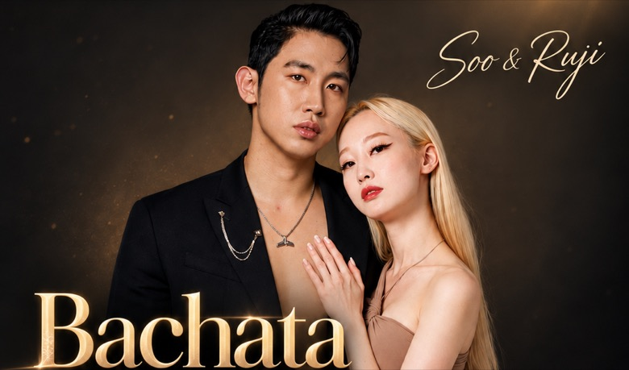
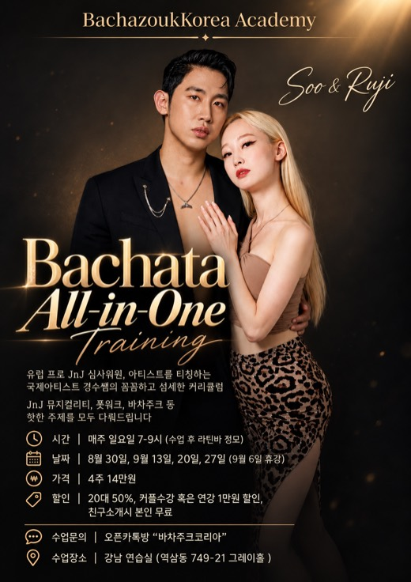
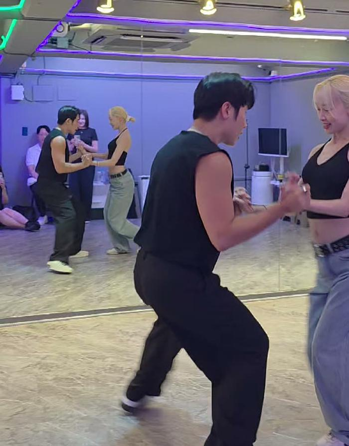
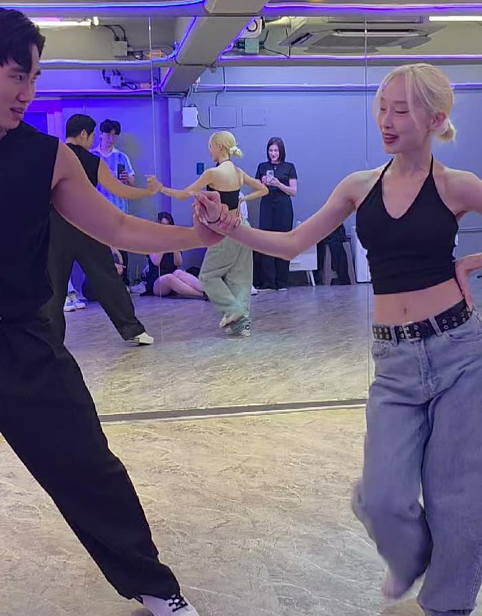

01
한 달 동안 한 곡에 집중한다
매주 새로운 걸 흩뿌리면 남는 게 없습니다. 그래서 이번 달은 음악을 하나 정해 그 안에서 반복하고, 마지막 주차에는 그 곡으로 다 같이 촬영하고 공연도 해 보자는 이야기가 나옵니다.
2026 . 08 . 30
◆

Head Movement & Partner Connection
2026년 8월 30일, 경수쌤과 류지쌤의 Bachata All-in-One Training 첫 주차 이야기입니다. 두 시간 연강을 현장 녹음에서 그대로 옮겼습니다. 1교시에서 커넥션의 원리를 하나씩 뜯어보고, 2교시에서 그것들을 로테서리 콤비네이션으로 엮습니다.
시범 · 2분 50초
음악에 맞춰 추는 시범입니다.
수업 정리 · 3분 14초
수업을 정리하며 짚어 주는 대목입니다.
핵심만 보기 — 형광펜 친 곳만 읽으면 두 시간이 3분입니다. 버튼을 다시 누르면 전체가 돌아옵니다.
아래 기록은 이 두 편을 글로 풀어 놓은 것입니다.
강사 · 과정
같은 동작을 두 분이 각자의 몸에서 한 번씩 설명합니다. 리드하는 몸과 받는 몸이 각각 무엇을 느끼는지가 따로 나오기 때문에, 이 기록도 발언자를 나눠 두었습니다.
Leader
경수쌤
Soo
2023년 한국 바차타 챔피언입니다. 지금은 겨루는 쪽보다 심사하는 쪽에 더 자주 서는데, 유럽 프로 잭 앤 질(J&J) 무대의 심사위원이자 현역 아티스트로 초청받아 전세계 60여 개 도시에서 가르쳐 왔습니다. 포스터에 “아티스트를 티칭하는 국제 아티스트”라는 말이 붙는 이유입니다.
바차타와 주크를 잇는 한국 최초의 바차주크 아카데미를 열어 직접 운영하고 있습니다. 이 수업에서는 리드와 전체 진행을 맡습니다. 손 높이로 체스트를 여닫는 법, 수직과 수평 리드의 구분, 패턴이 만들어지는 원리가 모두 이쪽 설명입니다. 동작을 알려주기보다 왜 그렇게 되는지를 먼저 풀어놓는 편이라, 이 기록에 남은 설명의 대부분이 여기서 나왔습니다.
@soo_bachazouk
Follower
류지쌤
Ruji
즉석에서 짝을 지어 겨루는 잭 앤 질(Jack & Jill) 무대에서 증명된 팔로워입니다. 2025년 KBL 킹 오브 킹스에서 우승했습니다. 정해진 안무 없이 처음 만난 리더의 신호만으로 추는 종목이라, 이 수업이 내내 이야기하는 커넥션이 그대로 실력이 되는 자리입니다.
같은 동작을 팔로워의 몸 안쪽에서 다시 풀어 줍니다. 코어가 몸을 데려간다는 원칙, 헤드가 물처럼 흐른다는 이미지, 손가락이 아니라 등 근육으로 텐션을 잡는 법이 이쪽입니다. 본인 이름을 딴 Ryubalance와 RyuTention을 이끌고 있습니다.
@ruji_latindancer

01
매주 새로운 걸 흩뿌리면 남는 게 없습니다. 그래서 이번 달은 음악을 하나 정해 그 안에서 반복하고, 마지막 주차에는 그 곡으로 다 같이 촬영하고 공연도 해 보자는 이야기가 나옵니다.
02
수업 내내 돌아오는 말은 헤드가 아니라 체스트와 중심 이동, 그리고 텐션입니다. 헤드는 그 셋이 갖춰졌을 때 자연스럽게 따라 나오는 결과입니다.
03
1교시에서 커넥션을 하나씩 뜯어 연습하고, 2교시에서 그것들을 긴 콤비네이션 하나로 묶습니다. 1교시를 건너뛰면 2교시는 그냥 외우기가 됩니다.
핵심 원리
형태를 바꿔가며 강의 내내 다시 돌아온 이야기들입니다. 나머지는 사실 이 다섯 가지의 응용이라고 봐도 좋습니다.
오른쪽으로 열면 무게는 온전히 오른쪽에, 왼쪽이면 온전히 왼쪽에 실려야 합니다. 반대쪽 발을 들어 올릴 수 있을 만큼요. 발만 옮기고 무게를 가운데 남겨 두면 리더는 리드를 걸 곳이 없고, 팔로워도 받을 것이 없습니다.
“발을 뗄 수 있을 정도로 무게를 확실하게. 바차타에서는 무게를 옮기는 게 너무 중요해요. 발만 움직이고 무게는 5 대 5로 두고 계시면 리더가 리드를 할 수가 없고, 팔로워가 리드를 받을 수가 없어요.”
경수쌤1교시 06:29
도해 01 · 실제 수업 영상

멀어지면 당기는 힘이 생기고, 가까워지면 미는 힘이 생깁니다. 이 탄력이 있어야 리드가 흐릅니다. 없으면 손으로 끌고 다니는 춤이 되고요. 경수쌤은 이것이 헤드 무브먼트만의 기술이 아니라, 댄스스포츠에서 제일 먼저 배우는 모든 춤의 기본이라고 짚습니다.
다만 한 사람만 해서는 성립하지 않습니다. 리더가 당길 때 팔로워가 가만히 있으면 리더가 앞으로 넘어집니다. 멀어지면 팔로워도 같은 힘으로 당기고, 가까워지면 같이 밀어야 이 순환이 돌아갑니다.
도해 02 · 실제 수업 영상

이 수업에서 가장 응용이 넓은 도구입니다. 턴은 턴이고, 체스트가 열리고 닫히는 것은 손 높이가 따로 만든다는 이야기죠. 손을 올리면 열리고, 중립으로 내리면 중립, 더 내리면 닫힙니다. 둘을 나눠서 이해하면 같은 턴 안에서도 팔로워의 상체를 원하는 대로 그릴 수 있습니다.
“턴이 시작되는 것과 이건 별개로 이해하셔야 돼요. 제가 가다가 손을 점점 내리기 시작하면 체스트가 클로즈가 되겠죠? 왜? 내 손이 아래니까.”
경수쌤2교시 01:20
리더가 팔로워의 손 위치를 통제하려고 하면, 정확히 그 순간 몸이 닫힙니다. 팔로워가 갈 길은 이미 정해져 있으니 손바닥 하나만 살짝 대고 보내 주면 된다는 이야기죠. 2교시 마지막에는 더 나아가서, 손가락 하나만 걸치고 팔로워의 다리가 지나갈 공간을 더 크게 내주라고 합니다.
“이걸 잡고 내가 돌려야지 생각하는 순간 닫혀요.”
경수쌤1교시 17:32
이어서 영어로 한 번 더 짚습니다. “Try not to control the position of her hands. Just let her go.”
예전 바차타는 무브가 단편적으로 끝나서 팔로워가 알아서 마무리해도 괜찮았습니다. 그런데 지금은 리더가 헤드에서 헤드로 이어 가기 때문에, 임의로 끊어 버리면 다음 동작이 죽습니다. 음악의 1이 나와도 리더가 아직 끝내지 않았다면 기다리는 쪽이 맞습니다.
“음악적으로 정확하게 원이 안 나온다면 무조건 기다리는 거고요. 심지어 원이 나와도 리더가 아직 동작을 안 끝냈을 수 있잖아요. 베이직 밟지 마시고 기다리세요.”
경수쌤1교시 33:29
오픈한 상태를 닫지 않고 유지하다가 틸트 턴을 한 바퀴 돌고, 그 자리에서 클로즈합니다. 반대 방향도 똑같고요. 출발 신호는 손이 아니라 중심 이동입니다. 리더가 먼저 무게를 옮겨 동력을 만들면 팔로워가 그것을 받아 나갑니다.
예전에는 중심을 아래로 한 번 내렸다가 에너지를 끌어올리며 열었는데, 요즘은 그 과정을 덜어내고 바로 뻗어서 엽니다. 다만 이 말은 2교시에서 조금 다듬어집니다 — 예비동작을 아주 없애라는 뜻이 아니라, 눈에 보일 만큼의 컨트랙션은 남겨 두어야 팔로워가 오픈을 느낄 수 있다는 이야기입니다.
체스트를 확장해 고정한 채로 턴에 들어갑니다. 헤드에는 힘이 들어가지 않아야 합니다. 헤드는 체스트 위에 얹혀 있으니, 체스트를 끌고 오면 헤드가 따라오는 느낌이 맞습니다. 체스트가 앞으로 나가 있으면 끌고 올 때 헤드가 떨어져 버리고요.
시선은 옆이 아니라 대각선 뒤쪽 위를 봅니다. 그래야 안정적으로 돌아가고, 리더의 리드가 조금 부족해도 실수가 줄어듭니다. 그리고 리더가 어설프게 줬다고 그대로 있기보다는, 내가 더 열어서 내 몸을 예쁘게 만든다는 태도가 팔로워의 몫입니다.
자주 나오는 실수
이 구간에서 바로 잡아 주는 것이 힐이 떨어지는 것입니다. 체스트에서 에너지를 만들어 올라가야 하는데, 턱이나 상체가 먼저 내려가면서 뒤꿈치가 뜹니다.
무게중심을 옮길 때 앞장서는 것은 코어와 엉덩이입니다. 나머지는 그냥 두면 됩니다. 코어로 데려가면 나머지는 알아서 펼쳐지는데, 상체를 먼저 데려가려고 하면 그 순간 형태가 무너집니다.
“가운데 있는 코어가 내 몸을 데리고 간다고 생각하고 움직이죠. 그러면 나머지는 내버려 두죠.”
류지쌤1교시 10:28
그립 하나가 춤의 결을 정합니다. 손가락 하나를 가져가면 팔로워는 팔꿈치를 내리는 것이 맞습니다. 전통 바차타의 그립이고 드롭 앤 캐치 같은 동작에 쓰죠. 반면 손가락 여러 개로 면을 만들면 밀 수 있게 되고, 끝에서 결과가 완전히 달라집니다.
여기서 흔한 오해 하나를 풀어 줍니다. 손바닥을 꼭 마주 대고 있어야 센슈얼이 되는 것은 아닙니다. 손등을 대더라도 손가락 여러 개로 면만 만들면 밀립니다. 베이직을 밟다가 손가락을 슬쩍 면으로 바꾸면서 체스트를 밀면 똑같은 루프가 생깁니다.
리더가 손을 들어 팔로워의 뒤쪽으로 보내려고 하면 다치기 쉽습니다. 뒤로 보낸다고 생각하기보다는, 가는 길에 살짝 내려 준다고 생각하는 편이 안전합니다. 팔로워가 갈 길은 이미 정해져 있으니 리더는 그 순간에 손을 잠깐 내려 주기만 하면 됩니다.
연습할 때는 한 바퀴를 다 끝내고 멈추지만 실제로 출 때는 그렇지 않습니다. 손이 애매한 중간 위치에 있는 순간이 있고, 그때 내려가는 게 느껴지면 그 영향을 받습니다. 100%를 다 채우고 멈춰야 하는 것은 아닙니다.
리더가 면으로 바꿔 주면 팔로워는 손바닥과 팔로 그 에너지를 받습니다. 중요한 건 높이입니다. 가슴과 코어 사이 어디쯤에서 리더가 자기 쪽으로 살짝 집중시켰다가 움직이죠. 양은 작지만 집중하게 만든 다음에 가야 합니다. 갑자기 툭 밀면 가지 않습니다.
“손만 밀면 프레임까지만 가기 때문에 안 될 수도 있어요. 이 모먼트에 ‘너를 밀고 싶다’는 바이브를 체스트로 주시는 게 중요합니다.”
류지쌤1교시 19:53
팔꿈치가 따로 놀면서 체중이 프레임에 실리지 않으면 결국 손 힘을 쓰게 되고, 손으로 싸우는 모양이 됩니다. 수업 마지막에는 아예 시각을 차단하고 감각만으로 서로의 밀고 당김을 느끼는 연습으로 넘어갑니다.
배운 것을 하나로 묶습니다. 리더의 왼손을 씁니다.
팔로워가 컨트롤할 지점
턴하면서 업 하는 부분은 모두 체스트의 스트레칭 위치와 이어집니다. 오른쪽으로 열면 앞쪽과 왼쪽 근육이 늘어나고요. 나머지는 힘을 빼되 움직이지 않는 편이 좋습니다. 그 부분만 움직이는 걸 먼저 익힌 다음에 스타일을 얹으라는 순서입니다.
강의에서 가장 태도에 관한 대목입니다. 리더는 중심 이동만 받쳐 주고, 열 때 오픈 신호, 닫을 때 클로즈 신호만 줍니다. 팔로워의 체스트 가동 범위를 리더가 물리적으로 다 정해 버리면 안 된다는 것이죠.
“레이디가 하기 싫은 이상으로 우리가 춤을 춰버리면 춤이 재밌지 않잖아요. 리더는 중심 위로만 서포트해 주시고, 레이디가 원하는 만큼 해주시면 좋겠습니다.”
경수쌤1교시 36:42
팔로워 쪽에도 짝이 되는 말이 붙습니다 — 편하게 할 수 있는 만큼만 예쁘게. 무리하면 본인도 불편하고 선도 안 예쁩니다.
류지쌤이 준 가장 좋은 비유입니다. 머리는 몸에서 가장 무거운 부분이라 늘 어딘가로 떨어지려 하는데, 그 떨어지는 방향이 곧 헤드롤입니다. 한쪽으로 떨어지면 그쪽 근육은 줄고 반대쪽은 늘어나면서, 물이 흐르듯 무거운 쪽으로 계속 흘러갑니다.
“홀드하고 바디를 컨트롤하려고 하면 되긴 하지만 불편해요. 근데 비워주면 그쪽으로 알아서 가요. 이렇게 생각하면 훨씬 더 소프트한 리더가 될 수 있어요.”
류지쌤1교시 39:30
부상과 바로 이어지는 대목입니다. 리더는 팔꿈치를 위로 두고 손가락은 위에서 아래로, 손 위치는 항상 수직입니다. 팔로워는 힘을 빼되 특히 고개를 숙이지 않아야 합니다. 왼손이 보이는 지점에서 고개를 숙여 버리는 것이 가장 흔한 부상 경로입니다. 무섭더라도 파트너를 믿어야 하고요 — 움츠러들기 시작하면 턴 자체가 진행되지 않습니다.
이어서 리드의 리듬 이야기가 나옵니다. 포인트에 도달해 웨이트 체인지로 중심을 살려 주면 팔로워가 출발합니다. 그 뒤에는 에너지만큼 알아서 가니 손의 텐션을 빼 줘야 합니다. 계속 팔에 힘을 주고 있으면 팔로워의 하체에도 계속 힘이 들어갑니다. 포인트와 릴렉스가 번갈아 오는 것, 그것이 리듬입니다.
겉보기에 달라 보이는 패턴들도 안에 든 내용은 거의 같습니다. 핸즈가 조금 달라지고, 로테서리가 하나 들어가고, 한 바퀴가 한 바퀴 반이 되는 식으로 요소가 붙으며 길어질 뿐이죠. 설계의 뼈대가 되는 규칙은 대칭적 이동입니다.
왼쪽 오픈과 오른쪽 오픈을 계속 오가는 것이 뼈대이고, 그 사이사이에 원하는 요소를 끼워 넣습니다. 무브가 헷갈릴 때 이 규칙을 알고 있으면 리더가 왔다 갔다 하는 구조가 읽힙니다.
2교시의 문을 여는 개념입니다. 준비하고 임펄스를 주면 턴은 이미 끝난 것이고, 그다음부터 체스트를 여닫는 건 손 높이가 맡습니다. 오픈할 때 리더도 같이 프레임을 열어 준 상태여야 하고, 그러면 손 위치가 자연히 높아집니다. 그 상태를 유지하면 팔로워의 체스트 레벨도 유지되고, 가다가 손을 내리면 중립으로, 더 내리면 클로즈로 갑니다.
그래서 나갈 때는 힙 턴을 유지하다가 손을 내려 줘야 팔로워가 느끼면서 닫힙니다. 리더가 “돌린다”고 생각하지 않는 것이 요령이고요. 팔로워 쪽 숙제도 분명합니다 — 리더의 손 높이를 느낄 줄 알아야 합니다. 아무 반응 없이 있으면 리더에게도 전해지지 않으니, 늘 약간의 긴장감을 쥐고 있어야 합니다.
웨이트 체인징은 어떤 방향으로든 에너지를 줘서 이동을 만드는 것입니다. 팔로워는 그 방향으로 갑니다. 언제까지냐면 에너지가 끝날 때까지, 또는 못 가게 막힐 때까지입니다. 가는 동안 엉덩이가 계속 그 방향으로 가고, 에너지는 코어로 계속 보냅니다.
한 번에 하나씩
움직이는 중에는 헤드를 쓰지 않습니다. 스텝이 끝났을 때 헤드가 움직이기 시작하고, 반대로 갈 때도 마찬가지입니다. 이 순서가 2교시 콤비네이션 전체의 뼈대가 됩니다.
베이직에서 왼손으로 열어 프레첼 형태를 만듭니다. 이 연습의 목적은 하나예요 — 이 프레임 안에서 리더가 오직 중심 이동만으로 팔로워를 보낼 수 있는지 보는 것입니다. 이어서 왼손 없이 같은 것을 해 보는데, 중심 이동만으로 당기면 팔로워가 한 번에 들어옵니다.
여기서 짚어 주는 것이 팔로워의 첫 발입니다. 카운트 1에서 오른발을 짚는 순간이 예뻐야 하고, 그 모멘텀에서 두 사람이 같이 움직여야 합니다. 이게 애매하면 리버스로 빠지게 되는데, 그게 바로 다음 개념입니다.
팔로워가 가던 방향을 살짝 꺾어 뒤로 돌리는 것입니다. 리더가 살짝 반대로 하면서 백스텝을 밟으면 팔로워에게 블록이 걸리며 뒤쪽으로 가게 되고, 회전하면서 중심의 방향이 바뀝니다. 마지막에 반대쪽이 늘어나며 텐션이 걸리고, 그것을 풀면서 다음 동작으로 넘어가죠.
“처음에 중심이 안 걸리면 뒤에부터 잘 안 걸리는 거거든요. 시작하는 에너지가 항상 매우 중요합니다.”
경수쌤2교시 13:02
리더에게 붙는 조언 하나 — 어려우면 자기 스텝보다 팔로워에게 집중하세요. 내 스텝은 좀 띄워도 괜찮습니다.
이날 강의실이 좁아서 나온 이야기인데 내용 자체가 중요합니다. 공간을 쓰는 방식이 둘로 갈립니다. 리더가 제자리에서 리드하면 롱 라인이 아름답지만 공간을 많이 쓰고, 서로 위치를 교환하면 원형 에너지로 방향을 계속 바꾸면서 작은 공간에서도 같은 춤이 나옵니다.
7·8에서 체스트 오픈 프레임을 만들고 1에서 무브를 시작합니다. 예전에는 1·2에서 열었지만 여기서는 3·4에 보여 주는 구조로 바뀝니다. 리더의 체스트가 닫혀 있으면 팔로워는 그냥 외워서 하고 있는 것이니, 리더도 같이 열어 줘야 합니다.
그리고 컨트랙션은 살짝이라도 반드시 있어야 합니다. 클로즈 없이 오픈만 하면 팔로워가 느낄 수가 없거든요. 그래서 연습할 때는 과장해서, 천천히 합니다. 자세도 함께 봐 줍니다 — 팔꿈치는 바깥으로, 엄지는 펴고, 손목은 꺾지 않기. 손목으로 뭔가를 들려고 하면 관절이 꺾이며 에너지가 중간에 사라집니다.
리더가 가장 많이 하는 실수
3·4에 빨리 닿고 싶어서 앞을 너무 서두릅니다. 그 전부터 팔로워가 따라올 수 있게 천천히 바이브를 줘야 거기서 잘 먹힙니다.
2교시의 주인공입니다. 오픈한 다음 팔로워에게 레프트 턴을 거는데, 체스트를 연 상태에서 리더의 손을 팔로워 쪽이 아니라 대각선 뒤쪽으로 보냅니다. 그러면 헤드가 뒤쪽에 남습니다.
“우리 길거리에 있는 치킨처럼 헤드가 고정돼 있는 거를 로스트 치킨 무브라고 해요. 방향은 리더가 결정하는 거예요. 내가 뒤로 꼬치를 꽂으면 뒤쪽으로 꽂힌 로스트 치킨이 되는 거고요.”
경수쌤2교시 23:25
방향은 앞이든 뒤든 왼쪽이든 상관없습니다. 축이 유지되는 것이 이 무브의 정의이고, 그 축의 방향을 리더가 정합니다. 이 대목도 사진을 붙이지 않았습니다 — 머리가 한쪽에 남아 있는지는 도는 동안을 봐야 알 수 있고, 영상에서 그 순간을 특정할 방법이 없기 때문입니다.
2교시에서 가장 정밀한 대목이고, 어긋나면 동작 자체가 성립하지 않는 지점입니다. 로테서리는 수직 리드입니다. 손이 올라갔다 내려오죠. 그래야 체스트가 유지되면서 턴이 들어갑니다. 반면 수평 리드를 하면 팔로워의 체스트가 계속 열리고 닫히는데, 그건 틸트 턴 계열의 리드입니다. 경수쌤은 “손이 올라갔다가 내려가는 거예요”라고 손동작으로 수직을 설명하고, 수평 쪽은 “수평”·“평행”이라는 말로 짚습니다. 이 대목은 사진을 붙이지 않았습니다 — 손이 지나간 길은 정지 사진 한 장에 담기지 않고, 영상의 어느 순간이 이 리드였는지 확인할 방법도 없기 때문입니다.
조각들을 하나로 묶습니다. 체스트가 열리고, 그 텐션으로 로테서리를 반만 쓴 뒤, 손이 뒤로 말리면서 다시 열립니다. 헤드를 반대쪽으로 꺾어 버리기 때문에 그대로 틸트로 들어가며 열리죠. 리더가 기억할 것은 리드의 방향이 세 번 바뀐다는 사실입니다.
| 순서 | 리드 방향 | 일어나는 일 |
|---|---|---|
| 첫 번째 | 수직 | 로테서리 — 헤드 축이 고정된 채 몸이 돌아간다 |
| 두 번째 | 수평 | 손이 뒤로 말리며 체스트가 다시 열린다 |
| 세 번째 | DOWN → OPEN | 내렸다가 다시 열어 마무리로 연결한다 |
팔로워는 같은 시퀀스를 업 → 스테핑 → 바운스와 헤드 세 단계로 기억합니다. 스테핑 구간에서는 헤드를 쓰지 않고, 마지막에 막혔을 때 바운스가 생기며 헤드가 움직입니다.
“헤드가 움직이면 우리 엉덩이가 같이 이동해요. 얘를 스탠딩이 버텨줘야 되니까. 마지막에 바운스를 붙일 때 상체만 가시는 게 아니라 바운스하고 엉덩이로 같이.”
류지쌤2교시 32:12
연습은 쪼개서 합니다. 팔로워를 헤드롤로 뒤쪽에 아주 살짝 보내 두고, 헤드를 고정한 채 뒤쪽으로 로테이션을 조금 말아 봅니다. 리더의 왼손은 팔로워의 체스트나 숄더 라인쯤에 두고 체스트를 굴린 다음, 아래로 내려 사이드로 뺍니다. 마지막 순간에는 손가락 하나만 걸친 채 끝까지 가면서 다리가 지나갈 공간을 내주고요.
무브가 하나 더 들어갔으니 박자가 밀립니다. 그래서 피니시 타이밍 자체를 옮깁니다.
7·8에서 컨트랙션, 1에서 열며 피니시. 1의 베이직을 잃었으니 3·4에서 스텝으로 채웁니다. 카운트를 늦추면서도 피니시는 늘 1에서 하고, 잃어버린 베이직은 뒤의 스텝으로 회수하는 구조죠. 무브를 더 넣고 싶을 때 두루 쓰는 원리입니다.
덧붙여, 핸드 체인지는 무브가 다 끝나고 하는 편이 좋습니다. 연습이 안 된 상태에서 중간에 바꾸면 흐름이 끊기거든요. 스타일링할 때는 상체를 접지 말고 세운 채로 — 업다운은 괜찮습니다.
“여러분 오늘 배운 거 엄청 어려워요. 이거 어려운 게 맞아요. 계속 다음 주에 연달아서 연습할 거예요. 반복해서. 좌절하지 마시고.”
경수쌤수업을 닫으며
용어
한국어와 영어가 섞여 진행되고 자동 인식도 거칠어서, 같은 동작이 여러 이름으로 잡힌 것은 맥락을 보고 하나로 정리했습니다.
| 용어 | 뜻 | 어디서 |
|---|---|---|
| 체스트 오픈 | 가슴을 확장해 여는 것. 배꼽과 체스트가 멀어지며 늘어나는 상태. | 모든 헤드 무브의 출발점 |
| 컨트랙션 | 오픈 직전에 살짝 수축하는 준비 동작. | 7 · 8 카운트 |
| 틸트 턴 | 몸을 기울인 채 도는 턴. 녹음에서는 틸턴·팁스턴 등으로 들립니다. | 1교시 기본형 |
| 헤드롤 | 머리가 무게에 따라 굴러가는 움직임. | 마무리 콤비 |
| 로테서리 | 헤드의 방향축이 고정된 채 몸이 도는 무브. 별명은 “로스트 치킨”. | 2교시 주제 |
| 리버스 | 팔로워가 가던 방향을 꺾어 중심 방향을 바꾸는 것. | 2교시 10:50 |
| 일라스티시티 | 고무줄 탄력. 멀어지면 당기고 가까워지면 미는 힘. | 1교시 26:30 |
| 프레임 | 두 사람 사이 팔과 상체의 구조. 텐션과 헤드 높이를 함께 전달합니다. | 전 구간 |
연습표
두 분이 직접 짚어 준 항목만 옮겼습니다. 새로 만든 조언은 넣지 않았습니다.
LEADER리더
FOLLOWER팔로워